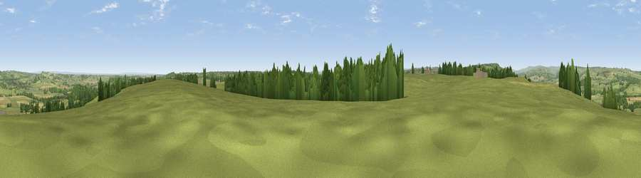

Viewpoint near Arthington
#13451 in England · top 13% of its area beats it · near ArthingtonThe view, rendered

A 360° render of this exact spot computed from the terrain model, tree cover and land cover — summer colours, afternoon light, calibrated against photographs of famous viewpoints. Real trees, hedges and buildings will differ in detail.
The panorama
Grey silhouette: terrain skyline in each direction (720 bearings, Earth curvature and refraction included). Dashed green: skyline with trees (+15 m) and buildings (+8 m) as obstacles. Blue strip: how far the ground is visible on each bearing.
Where the view opens
Wedge length = distance to the farthest visible ground on that bearing (vegetation-aware). Rings at 10, 25 and 50 km.
What fills the view
71% grassland · 15% woodland · 11% cropland · 3% built-up ·
Angular shares of the visible panorama (visual magnitude), not map area. Landscape diversity 0.39 (0–1 Shannon).
Key numbers
More beautiful places nearby
The staircase of upgrades: each row has a higher view potential than everything closer. Driving times are estimates from straight-line distance, calibrated against real road routing — check an actual route before setting out.
| Place | Direction | Drive | Score |
|---|---|---|---|
| The Bowshaws | E · 0 km | ~1 min | 59.6 |
| Viewpoint near North Rigton | N · 6 km | ~12 min | 66.6 |
| Rawdon Trig point | WSW · 7 km | ~14 min | 69.6 |
| Rawdon Billing | WSW · 7 km | ~15 min | 73.0 |
| Viewpoint near Otley | W · 8 km | ~16 min | 77.5 |
| Viewpoint near East Witton | NNW · 44 km | ~64 min | 77.8 |
| Hood Hill | NNE · 44 km | ~64 min | 79.6 |
| Viewpoint near Thirlby | NNE · 46 km | ~67 min | 81.5 |
53.88582, -1.57741 · source: screening · position refined by local search. Computed location — check access rights before visiting.